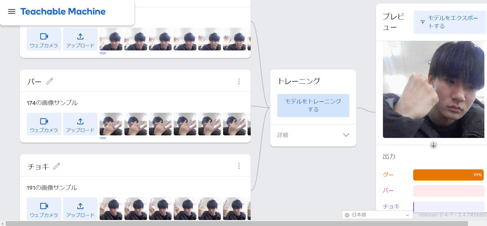
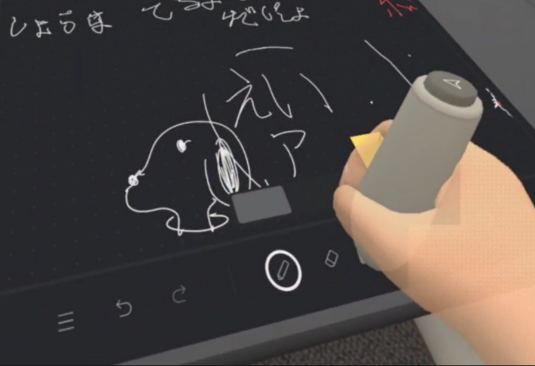

第2週目
2-1 １週目のレポートをHTMLで作る
１週目のレポート
1.内容
1週目で学んだことをHTMLでレポート作成する
2.感想
これまではワードやドキュメントなどのレポート作成ソフトを使ってレポートを作成したけれど今回初めてこういう形でレポートを作成してみて面白かったのと少しやりずらいところもあって苦労した。
しかしこういうやり方もあるんだなと新しい発見ができてとてもいい経験になった。まだまだ慣れないところもたくさんあるので徐々に慣れていきたい。
2-2 機械学習体験

1.内容
ディープラーニングやAIについて講義をききじゃんけんの手を判断するソフトを体験する。
2.感想
AIについてはもともと知っていたけれど、そこまで詳しくはなかったので今回改めて学べたり、新しいことも知ることができてとても興味深かった。
さらにじゃんけんの手を判断するソフトを使ったときは最初驚いたし身の回りでも使われてそうだなと考えた。
これらを駆使して社会に役立つことができたらいいなとも思い高専生活5年間で様々なことを知れればなと思った。
2-3 VR（バーチャルリアリティー：Virtual Reality）会議室の体験

1.内容
VRを体験する。
2.感想
VRの存在は知っていたしどういったものなのかも知ってはいたけれど体験したことが一度もなかったのでとてもいい経験になったし面白かった。
ゴーグルをかけてみると自分が想像していなかった世界が目の前にあり驚きを隠せなかった。また新しい世界に気づけたのでもっと知りたいと思った。
その一方でVRは思ったよりも労力がいることにも気づき、このさきもっと改良できるのではないかとも考えた。